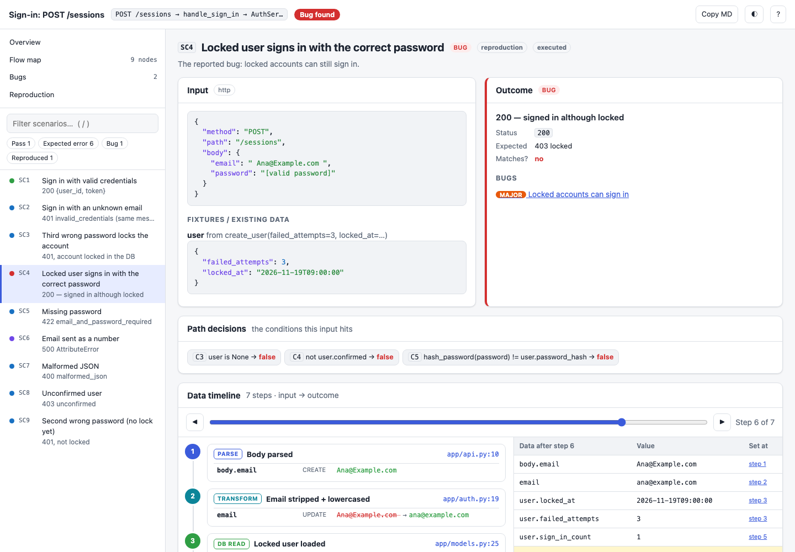
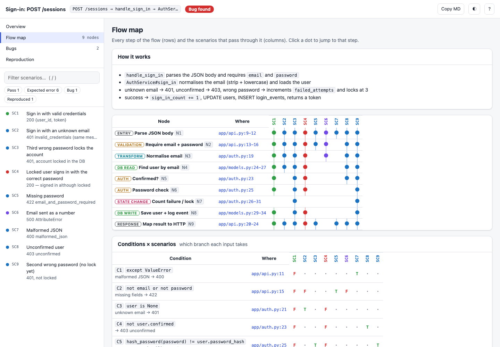
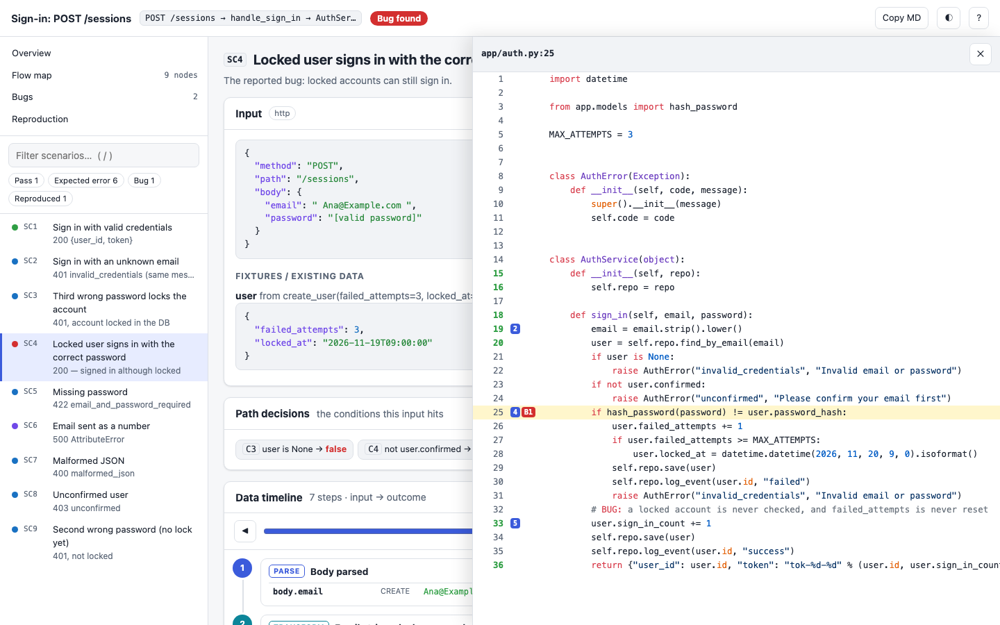

Run /investigate on an endpoint, a method, the code you've highlighted, a bug report or a stack trace. It maps the flow from request to database to response, builds realistic inputs from your schema and factories, simulates every branch and edge case, records where each value changes, and pin-points the line where it goes wrong.
/plugin install investigate --marketplace rewin0087/claude-code-investigate/investigate:investigate. On versions older than 2.1.275, run /plugin marketplace add rewin0087/claude-code-investigate, then /plugin install investigate@rewin0087-investigate.git clone https://github.com/rewin0087/claude-code-investigate.git ~/.claude/skills/investigate/investigate in any repo. Update with git -C ~/.claude/skills/investigate pull.
Each scenario shows its input, the branches it took, every value before → after, and the outcome.
Not just "where did it crash": what the data was at every step, for every path, and which line made it wrong.
Request parsing, validation, callbacks, business logic, DB reads and writes, external calls, jobs and the response, with file, line and method for each step.
One scenario per branch outcome: valid sign-in, wrong password, locked account, unknown email, malformed input, and more.
Boundaries, blank vs nil, unicode, duplicates, permissions, concurrency, timeouts and failing external APIs.
Built from your DB schema, factories, fixtures, seeds and API contracts, or masked read-only samples from a local DB.
Python and Ruby tracers record every line's variable and attribute changes, SQL with binds, HTTP calls and exceptions.
Python, Ruby, JS/TS, Java/Kotlin, Go, PHP and .NET traces are mapped to your files and turned into a reproduction scenario.
The exact line, the value that makes it wrong, the scenarios that show it, a code fix and references.
Bug reports, repro steps, expected behaviour, screenshots, ticket links or free text after --.
Select a method or class in VS Code or JetBrains and run /investigate.
A data timeline with a state scrubber, a flow and condition matrix, code with executed lines, bugs and reproduction views.
Never modifies your repo, runs only in the test env, stubs external calls, reads the DB read-only, and masks secrets and PII.
Detects languages, frameworks, ORMs, test runners and factories from your manifests and file layout.
Scripts handle the exact parts: resolving targets, parsing traces, finding schema and factories, recording runtime data, validating every file:line. Claude handles the reasoning.
An endpoint, method, selection, bug report or stack trace, plus your instructions.
YouResolves the entry point, maps trace frames to lines, and finds the schema, factories, routes and tests.
ScriptMaps nodes and conditions, builds inputs, enumerates scenarios, and walks each one step by step.
ClaudeOptional: runs scenarios in the test env under the tracer and builds the steps from what really happened.
TracerA verdict, scenario table and bugs in the chat, plus the interactive report.
YouPlugin installs use /investigate:investigate. Standalone installs use /investigate.
# an endpoint, a method or a line range /investigate "POST /users/sign_in" /investigate AuthService#sign_in /investigate app/services/checkout.rb:40-90 # the code highlighted in VS Code / JetBrains /investigate # reproduce a stack trace /investigate --trace crash.log # a bug report plus your own notes /investigate --bug JIRA-123.md -- locked users can still log in # run scenarios with the runtime tracer (test env) /investigate Orders::Checkout.call --run # realistic inputs from masked local-DB samples /investigate "POST /api/orders" --db --scenarios 12


Only if you allow it. By default it simulates by reading the code. With --run, or after you approve it, it runs scenarios through your test runner in the test environment, with external calls stubbed.
Any stack for static simulation. The line-by-line runtime tracers cover Python and Ruby/Rails. For JS/TS, Go, Java/Kotlin, PHP and .NET it writes a throwaway test that logs data snapshots. Stack traces are parsed for all of these.
From your DB schema, factories, fixtures, seeds and API contracts. With --db it can also read a few rows from a local dev or test database, read-only, with secrets and personal data masked.
Yes. Pass it with --trace or paste it. It maps the frames to your files, works out which input reaches the failing line, builds a reproduction scenario, and points at the step where the bad value is created.
No. Harnesses, traces and reports go to .investigate/ in your repo, which is excluded from git through .git/info/exclude.
/investigate:investigate?Claude Code namespaces plugin commands as plugin:skill. To type plain /investigate, install it as a standalone skill by cloning it into ~/.claude/skills/investigate.